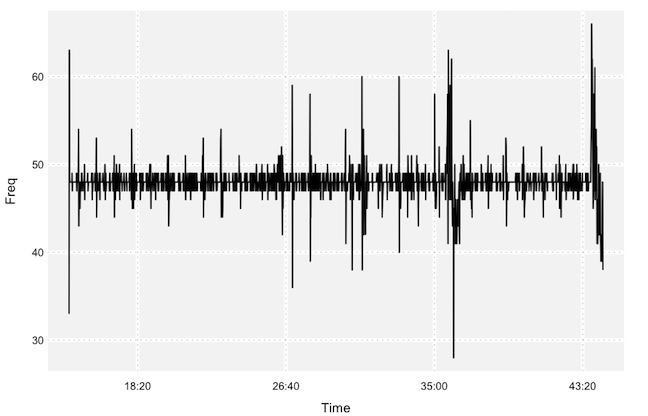

Live streaming tweets
rtweet: Collecting Twitter Data
Installing and loading package
Prior to streaming, make sure to install and load rtweet. This vignette assumes users have already setup user access tokens (see: obtaining and using access tokens).
## Install rtweet
install.packages("rtweet")
## Load rtweet
library(rtweet)Specifying parameters
In addition to accessing Twitter’s REST API (e.g., search_tweets, get_timeline), rtweet makes it possible to capture live streams of Twitter data using the stream_tweets() function. By default, stream_tweets will stream for 30 seconds and return a random sample of tweets. To modify the default settings, stream_tweets accepts several parameters, including q (query used to filter tweets), timeout (duration or time of stream), and file_name (path name for saving raw json data).
## Stream keywords used to filter tweets
q <- "hillaryclinton,imwithher,realdonaldtrump,maga,electionday"
## Stream time in seconds so for one minute set timeout = 60
## For larger chunks of time, I recommend multiplying 60 by the number
## of desired minutes. This method scales up to hours as well
## (x * 60 = x mins, x * 60 * 60 = x hours)
## Stream for 30 minutes
streamtime <- 30 * 60
## Filename to save json data (backup)
filename <- "rtelect.json"stream_tweets()
Once these parameters are specified, initiate the stream. Note: Barring any disconnection or disruption of the API, streaming will occupy your current instance of R until the specified time has elapsed. It is possible to start a new instance or R—streaming itself usually isn’t very memory intensive—but operations may drag a bit during the parsing process which takes place immediately after streaming ends.
## Stream election tweets
rt <- stream_tweets(q = q, timeout = streamtime, file_name = filename)Parsing larger streams can take quite a bit of time (in addition to time spent streaming) due to a somewhat time-consuming simplifying process used to convert a json file into an R object. For example, the stream above yielded a little over 140,000 tweets and took my Macbook Air, which has 4gb of RAM, about 10 minutes to process.
Saving files
Given a lengthy parsing process, users may want to stream tweets into json files upfront and parse those files later on. To do this, simply add parse = FALSE and make sure you provide a path (file name) to a location you can find later. To ensure the stream automatically reconnects following any interruption prior to the specified stream time, use stream_tweets2().
Regardless of whether you decide to setup an organizational system for streaming data, the process of streaming a file to disk and parsing it at a later point in space-time is the same, as illustrated in the example below.
## No upfront-parse save as json file instead method
stream_tweets(
q = q,
parse = FALSE,
timeout = streamtime,
file_name = filename
)
## Parse from json file
rt <- parse_stream(filename)
## stream_tweets2 method
twoweeks <- 60L * 60L * 24L * 7L * 2L
congress <- "congress,senate,house of representatives,representatives,senators,legislative"
stream_tweets2(
q = congress,
parse = FALSE,
timeout = twoweeks,
dir = "congress-stream"
)
## Parse from json file
rt <- parse_stream("congress-stream.json")Returned data object
The parsed object should be the same whether a user parses up-front or from a json file in a later session. The returned object should be a data frame consisting of tweets data.
## Preview tweets data
rtThe returned object should also include a data frame of users data, which Twitter’s stream API automatically returns along with tweets data. To access users data, use the users_data function.
## Preview users data
users_data(rt)Plotting
Once parsed, ts_plot() provides a quick visual of the frequency of tweets. By default, ts_plot() will try to aggregate time by the day. Because I know the stream only lasted 30 minutes, I’ve opted to aggregate tweets by the second. It’d also be possible to aggregate by the minute, i.e., by = "mins", or by some value of seconds, e.g.,by = "15 secs". I usually fiddle around with this a bit until the plot looks good.
## Plot time series of all tweets aggregated by second
ts_plot(rt, by = "secs")
Plotting with filters
The ts_plot() function can also generate multiple time series for grouped data frames.
## plot multiple time series by first grouping the data by screen name
rt %>%
dplyr::group_by(screen_name) %>%
ts_plot() +
ggplot2::labs(
title = "Tweets during election day for the 2016 U.S. election",
subtitle = "Tweets collected, parsed, and plotted using `rtweet`"
)Often times these plots kinda resemble a frowny face with the first and last points appearing significantly lower than the rest. This is because the first and last intervals of time are artificially shrunken by connection and disconnection processes. To remedy this, users can specify trim = 1 to tell R to drop the first and last observation for each time series. This usually yields a much more attractive looking plot.